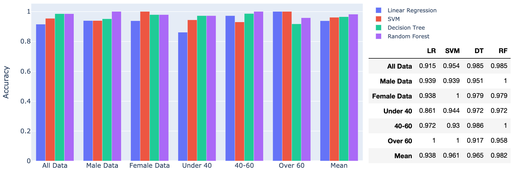
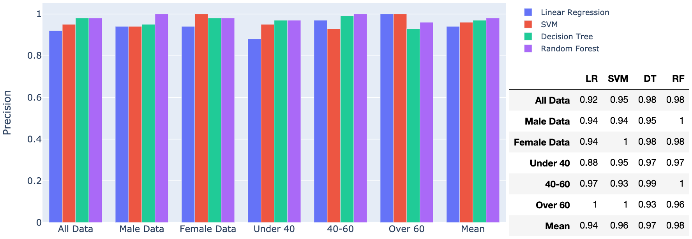
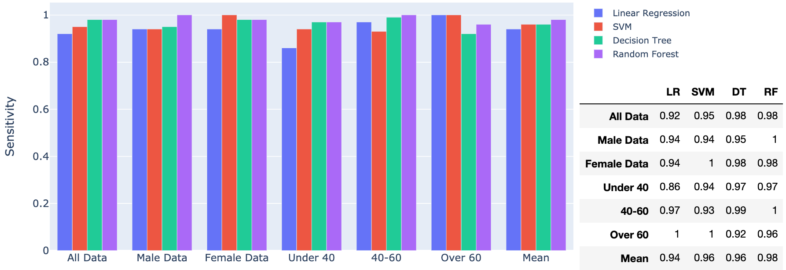

Diabetes Machine Learning
Machine Learning Models
Four different machine learning models are compared here in their ability to correctly classify instances of Type II Diabetes, based on 14 symptoms and 2 demographic identifiers as input features.
The Models
Logistic Regression
A logistic regression makes predictions about binary outcomes, that is, whether or not a data point belongs in one of two categories, when compared to the rest of the dataset. The regression mathematically determines the probability that a novel data point belongs in a certain class, if the probability is above a certain threshold, then the sample is assigned to that class, otherwise it is assigned to the other class in the binary. In this project, we are attempting to classify individuals based on thier risk for Type II Diabetes, that is, they are either at risk or not at risk, and so a logistic regression model is ideal.
SVM
Support Vector Machines are also binary classifiers, much like logistic regressions, however unlike the sigmoid curve used in the logistic regression, the SVM is a linear classifier. As such, it generates a straight line that separates the two classes of data points and attempts to ensure that the line is as equally distant from the two subsets as possible. Support Vectors are the data points that are closest to the straight line that divides the subsets, these data points serve as decision boundaries for classification.
Decision Tree
Decision trees are structures that encode a series of true/false questions, which are themselves represented by a series of if/else statements. Observations about the individuals are used to form conclusions about where they ought to be classified. The answer to each true/false question will cumulate so that the ability of the tree to form an accurate conclusion increases. In this project, the answer to whether or not a person is at risk for Type II diabetes is rooted in the answers to the health symptom questions, which were presented to each patient as true/false statements. These answers are entered into the decision tree sequentially, until a conclusion is reached that classifies the individual patient as either at risk or not at risk.
Random Forest
Random forest is a form of ensemble learing, which combines multiple models, such as decision tree algorithms, to help increase the robustness, and decrease the variance of the model. Multiple algorithms independently learn from and make predictions about the dataset, with the final prediction of the entire model being based on accumulated predictions from each of the individual algorithms. These individual algorithms are considered weak learners, that on their own have very little predictive power, but when combined in multiples, can produce a very high predictive power. Random Forests in particular, combine many smaller decision trees which are individually built from a random subset of the whole set of features. In this project's case, each decision tree would take a randomly selected subset of symptoms and attempt to classify individual patients based on just that subset. A radom forest model works best with a large set of features as input, due to the wide variety of weak learners it can generate, the cumulative predictive power increases with the possible combinations of features. Random forest models are also highly robust against overfitting, as they apporach the classification problem from as many possible angles as possible, figuratively speaking, since each individual decision tree is trained on a different subset of data. This also allows us to easily gague the relative importance of each feature in predicting whether or not an individual should be classified as at risk or not at risk for Type II diabetes.
Analysis of ML Models
Accuracy
The Accuracy score of a model is a measure of how many of its classification predictions were in fact correct. This is calculated by taking the ratio of correct classification predictions to total classification predictions attempted. That is, the amount of True Negative predictions and True Positive predictions divided by total amount of predictions. In this project, the accuracy score represents the degree to which the machine learning model is able to correctly classify patients as at risk or not at risk for diabetes based on the portion of the dataset separated out for testing, rather than training. This score is an indication of how well we ought to expect the individual models to classify novel data points.
According to the figure below, and as expected, the random forest model has the highest mean accuracy score across all six data subsets, with the score never dropping below 0.958. This means that we ought to expect the random forest model to correctly classify any given patient atleast 95% of the time.
The only data subset that the random forest model struggled with, was the set of patients with ages over 60, which both the logistic regression and SVM models were able to classify correctly 100% of the time. Although this anomaly probably has to do with the smaller data subset avaliable for patients over 60, with only 95 entries in the dataset.
Precision
Precision, also known as positive predictive value (PPV), is a measure of how reliable a positive classification is. It is calculated by taking the ratio of correct positive classifications to all positive classifications. That is, the amount of True Positive predictions divided by the total amount of Positive predictions (True Positive + False Positive). In this project, the PPV represents the degree to which the machine learning model is reliably able to classify patients who are actually at risk of diabetes, as at risk in its predictions. In this context, The more precise a machine learning model, the more likely it is to correctly calssify at risk patients.
In the figure below, precision follows a similar pattern to accuracy scores discussed previously, in that the random forest model has the greatest mean precision, only really falling short in the over 60 category, in which logistic regression and SVM models have the best performance.
As a result, we can conclude that based on the current dataset, the random forest model will most reliably classify patients who are actually at risk for diabetes, as at risk in its predictions.
Sensitivity
Sensitivity, also known as recall, is a measure of how many instances of a positive classification were actually correctly classified as positive. This is calculated by taking the ratio of correct positive classifications to the total amount of actual positives. That is, the amount of True Positive predictions divided by the sum of actual positives (True Positive + False Negative). In this project, the recall represents the liklihood that the model will accurately classify those individuals who actually have diabetes, as having diabetes. That is, sensitivity is a measure of how many people who actually had diabetes, were correctly diagnosed.
In the figure below, once again we see that the random forest model has the highest mean sensitivity, as well as having the lowest variance across groups.
Within the context of our project, which seeks to generate a preliminary diagnosis for Type II diabetes, by classifying an individual as either at risk, or not at risk, based on a set of 16 features, sensitivity is the most important metric to consider. Since this is merely a preliminary screening tool, not something designed to replace the expertise and experience of clinicians, it is paramount that the model classify as many individuals who actually have diabetes, as being at risk for diabetes, so that further screening may take place for a final diagnosis. If the sensitivity is low, it may actually turn away patients who may in fact be at risk for diabetes, by giving them a classification of not at risk, ultimately proving to be counter productive to its intended purpose. Accuracy and precision are also important metrics to consider, since a low accuracy indicates a poorly functioning classifier and low precision indicates the model's unreliability in its positive classifications. However, within the context of our application, and its intended use, sensitivity is the most important metric to consider when selecting a machine learning model.
Importance of Features
Having recognized the random forest algorithm as the best performing model in this project, with the added benefit that it is robust against overfitting, unlike the decision tree algorithm, it can be chosen as the model we use to produce our calssification application. Random Forest also allows us to measure the importance of features, which is a relative measure of how much a given feature contributes to the final random forest model, in relation to the other input features.
Polyuria is a condition where the body urinates more than usual and passes excessive or abnormally large amounts of urine each time you urinate.
Polydipsia is a condition involving excessive thirst and is one of the initial symptoms of diabetes. It is also usually accompanied by temporary or prolonged dryness of the mouth.
Alopecia is a condition that causes hair to fall out in small patches, which can be unnoticeable. The condition develops when the immune system attacks the hair follicles, resulting in hair loss.Polyphagia, also known as hyperphagia, is the medical term for excessive and persisting hunger. It differs from having an increased appetite as a result of physical exertion; while hunger levels will return to normal after eating in those cases, polyphagia remains no matter how much food is consumed.
The importance of features is relatively consistent across groups, with Polyuria and Polydipsia being the top two in all groups except female only and over 60. Interestingly enough, the age of the patient and the presence of alopecia are more significant contributors to an accurate classification amongst female patients, while alopecia is a very minor predictor of male diabetic status, and age is still the third most important feature in predicting diabetes amongst men. In the over 60 category, polydipsia remains an important factor, while itching and delayed healing become important in the oldest generation. Overall, we have revealed is a clear distinction between the features that are most important to male and female patients when diagnosing diabetes, while also discovering a clear change in the symptoms that become most important with a progression in age.